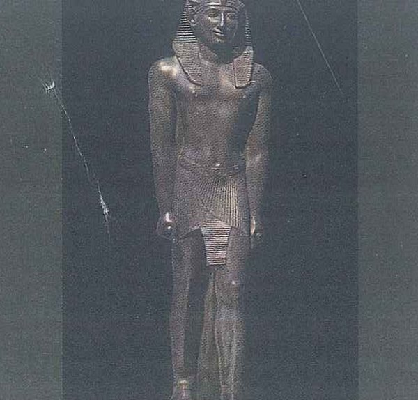

Mục tiêu bài học & khởi động
Mục tiêu bài học
Sau bài học, học viên có thể:
- Gọi tên từ và cụm từ của 4 nhóm: lịch sử cổ đại, đánh cắp và bảo vệ quá khứ, từ chỉ cảm xúc, địa danh lịch sử và bài nói.
- Giải thích các cách dùng one: one of, one or two, one by one, one day và one / ones.
- Phân biệt tính từ với trạng từ (sad / sadly), tính từ đuôi -ed với tính từ đuôi -ing (worried / worrying).
- Suy ra thái độ của người viết trong bài Stealing history qua các từ chỉ cảm xúc như hard-working, desperately và sadly.
- Tìm chi tiết, lý do và mục đích của người viết trong PET Reading Part 2–4.
- Nhận ra các phần của bài nói trong Track 91 và thông tin chính trong PET Listening Part 1, 3 và 4.
- Thuyết trình về một bảo tàng cho quê bạn hoặc một địa danh lịch sử bạn đã đến, có cụm dẫn dắt (Let me begin by …) và chỗ ngắt nghỉ.
- Mô tả và đánh giá một sự kiện lịch sử quan trọng hoặc một địa danh lịch sử (Speaking Topic 4–5) theo khung 7 bước.
- Lập luận cho quan điểm của mình trong một đoạn văn học thuật nêu ý kiến, dài 140–170 từ: hai lý do kèm ví dụ, rồi phản hồi ý kiến phía bên kia.
Lead-in 1 · Báu vật từ quá khứ: quan sát, phỏng đoán và nêu cảm nghĩ

- Câu 1"What is this face made of, and what do you think it was for?"
- Câu 2"Why do you think the photographer covered its mouth with a black glove?"
- Câu 3"Have you ever seen gold or jewellery this old with your own eyes? Where?"

- Câu 1"Which animal does the lid remind you of?"
- Câu 2"What do you think people kept inside this jar? Make a guess."
- Câu 3"Is there an old object in your family that has been passed down? What is it?"

- Câu 1"Who do you think this man was: a king, a soldier or a worker? What makes you think so?"
- Câu 2"How do you think people made a statue like this without modern tools?"
- Câu 3"Which statue do you walk past most often, at home or near the academy? Who does it show?"

- Câu 1"What is the man doing, do you think? Look at his arms and at the birds."
- Câu 2"The colours are still bright today. How do you think they lasted so long?"
- Câu 3"If you painted one wall about the life of a medical cadet, what would you put on it?"

- Câu 1"What do you think this heavy box was for, and where is it?"
- Câu 2"Why do you think the lid was made so big and so heavy?"
- Câu 3"Would you like to work in a place like this, for example as an archaeologist or a forensic doctor? Why?"
- Câu 1"Which country do you think this is? What clues can you see?"
- Câu 2"How do you think people carried the stones up so high?"
- Câu 3"What is the highest place you have ever climbed to, and how did you feel at the top?"
Lead-in 2 · Đồng ý hay không?
1 · History is the most useful subject at school.
Bài mẫu
I don't agree. History is interesting, but maths, chemistry and biology are what got me into the academy, and I still use them every week. I'd call history the most meaningful subject, not the most useful.
Dịch nghĩa
Tôi không đồng ý. Lịch sử thú vị thật, nhưng chính toán, hoá và sinh mới đưa tôi vào học viện, và tuần nào tôi cũng còn dùng đến. Tôi cho lịch sử là môn có ý nghĩa nhất, chứ không phải môn hữu ích nhất.
2 · Old objects belong in museums, not in people's homes.
Bài mẫu
I partly agree. Something like a royal crown or an ancient statue should be in a museum, where experts can look after it and everyone can see it. But my grandfather's old army compass would mean nothing in a glass case, and at home it means a lot to us.
Dịch nghĩa
Tôi đồng ý một phần. Những thứ như vương miện của vua hay một pho tượng cổ nên được đặt trong bảo tàng, nơi có chuyên gia bảo quản và ai cũng được xem. Nhưng chiếc la bàn quân đội cũ của ông tôi mà nằm trong tủ kính thì chẳng còn ý nghĩa gì, còn ở nhà, nó rất quý với cả gia đình tôi.
3 · A good presenter never reads from notes.
Bài mẫu
I disagree. In my pharmacology seminar I kept a small card with the drug doses on it, because getting a number wrong is far worse than glancing down for a second. Reading out every line is the problem, not checking one key fact.
Dịch nghĩa
Tôi không đồng ý. Trong buổi seminar môn dược lý, tôi cầm theo một tấm thẻ nhỏ ghi liều thuốc, vì nói sai một con số còn tệ hơn nhiều so với liếc xuống thẻ một giây. Cái dở là đọc từng dòng, chứ không phải xem lại một thông tin quan trọng.
4 · Every town needs its own museum.
Bài mẫu
I agree, as long as it's small and cheap to run. My hometown has a two-room museum about the war, and that's where kids first see what their great-grandparents went through. A big museum in a city two hours away just can't do that.
Dịch nghĩa
Tôi đồng ý, miễn là bảo tàng nhỏ và tốn ít chi phí vận hành. Quê tôi có một bảo tàng hai phòng về chiến tranh, và chính ở đó các em nhỏ lần đầu được thấy các cụ ngày trước đã trải qua những gì. Một bảo tàng lớn ở thành phố cách hai tiếng đi đường thì không làm được điều đó.
5 · Taking a small stone from a historical site as a souvenir does no harm.
Bài mẫu
I strongly disagree. One stone doesn't seem like much, but a popular site can get thousands of visitors a day, and if each of them took one, the walls would slowly disappear. A photo makes a better souvenir, and it costs the place nothing.
Dịch nghĩa
Tôi hoàn toàn không đồng ý. Một hòn đá thì có vẻ chẳng đáng là bao, nhưng một di tích nổi tiếng có thể đón hàng nghìn lượt khách mỗi ngày, và nếu ai cũng lấy một hòn thì tường sẽ dần biến mất. Chụp một tấm ảnh làm kỷ niệm còn hay hơn, mà di tích cũng chẳng mất gì.
6 · Seeing a place in photos is almost as good as going there.
Bài mẫu
I disagree. Photos can't give you the cold wind on your face or the feeling of standing where people lived hundreds of years ago. I still look at them first, though, to decide if a trip is worth the money.
Dịch nghĩa
Tôi không đồng ý. Ảnh không cho bạn cảm giác gió lạnh phả vào mặt, hay cảm giác được đứng đúng nơi người xưa từng sống hàng trăm năm trước. Dù vậy, tôi vẫn xem ảnh trước để quyết định chuyến đi có đáng tiền hay không.
- I strongly agree / I partly agree / I totally disagree, because …
- It depends on whether …
- From my own experience at the academy, …
- I see your point, but …
Lead-in 3 · Bài nói, bài thuyết trình: ai trình bày và để làm gì?
SB p. 136 Ex 1 · Trước hết, kể với bạn bên cạnh: bạn đã bao giờ nói chuyện hay thuyết trình trước người khác chưa, bằng tiếng Việt hay tiếng Anh? Về chủ đề gì? Sau đó xem bốn tình huống dưới đây.
- Câu 1"Who gives short talks in a hospital, and who listens to them?"
- Câu 2"Why would a young doctor have to present at the morning meeting?"
Bài mẫu
Every morning on the ward, the doctor who was on night duty reports the new patients to the whole team, usually in two or three minutes. Junior doctors also present unusual cases, so everyone can learn from them. You need to be quick and sure of your numbers.
Dịch nghĩa
Sáng nào ở khoa cũng vậy, bác sĩ trực đêm báo cáo các bệnh nhân mới vào cho cả khoa, thường chỉ trong hai, ba phút. Bác sĩ trẻ còn trình bày những ca bệnh lạ để mọi người cùng rút kinh nghiệm. Người báo cáo phải nói nhanh và nắm chắc các con số.
- Câu 1"What kinds of presentations do cadets give at the academy?"
- Câu 2"Why do teachers ask you to present instead of only handing in a report?"
Bài mẫu
We present group projects in seminars, and a few cadets present their research at the student science conference every year. Teachers can see straight away whether we really understand a topic or are just repeating the textbook. Standing up in front of a full lecture hall is good training for later, too.
Dịch nghĩa
Chúng tôi thuyết trình bài tập nhóm trong các buổi seminar, và năm nào cũng có vài học viên trình bày đề tài ở hội nghị nghiên cứu khoa học sinh viên. Thầy cô nhìn là biết ngay chúng tôi hiểu bài thật hay chỉ nhắc lại giáo trình. Đứng nói trước cả một giảng đường kín chỗ cũng là cách rèn luyện tốt cho sau này.
- Câu 1"What could someone talk about at a meeting of a local club or the commune council?"
- Câu 2"Would you give a health talk in your home village? What would it be about?"
Bài mẫu
At council meetings in my village, people discuss things like a new road or repairs to the old communal house. Last summer a doctor from the district hospital gave a talk there about dengue fever, and people kept asking him questions for an hour. I'd happily do the same about first aid when I'm home on leave.
Dịch nghĩa
Ở các buổi họp thôn quê tôi, mọi người bàn những việc như làm con đường mới hay sửa ngôi đình cũ. Hè năm ngoái, một bác sĩ bệnh viện huyện về đó nói chuyện về sốt xuất huyết, và bà con hỏi anh ấy suốt cả tiếng đồng hồ. Khi được về phép, tôi cũng rất sẵn lòng nói chuyện như thế về sơ cứu.
- Câu 1"Who usually makes a speech at a Vietnamese wedding?"
- Câu 2"Which events at the academy need a short speech, and who gives it?"
Bài mẫu
At a Vietnamese wedding, an older relative normally speaks for each family, and the speech can go on longer than the guests would like! At the academy there are speeches at graduation and when a commander retires. The best ones are short and a bit funny.
Dịch nghĩa
Trong đám cưới người Việt, mỗi bên gia đình thường có một người lớn tuổi trong họ đứng ra phát biểu, và bài phát biểu có khi dài hơn khách mong muốn! Ở học viện thì có phát biểu trong lễ tốt nghiệp và khi một chỉ huy nghỉ hưu. Những bài hay nhất thường ngắn gọn và hơi dí dỏm.
- People give talks at … to …
- The speaker has to …, so …
- I once had to present … and I felt …
- The hardest part for me is …
Lead-in 4 · Bạn biết bao nhiêu từ cho mỗi nhóm trong 4 nhóm?
In two minutes, list as many historical objects as you can: a coin, a sword … Then add people and places.
Which words do you know for crimes against the past, and for keeping old things safe?
Which words tell you how a writer feels, like amazing or luckily?
Which words help you describe a famous place, and then give a talk about it?